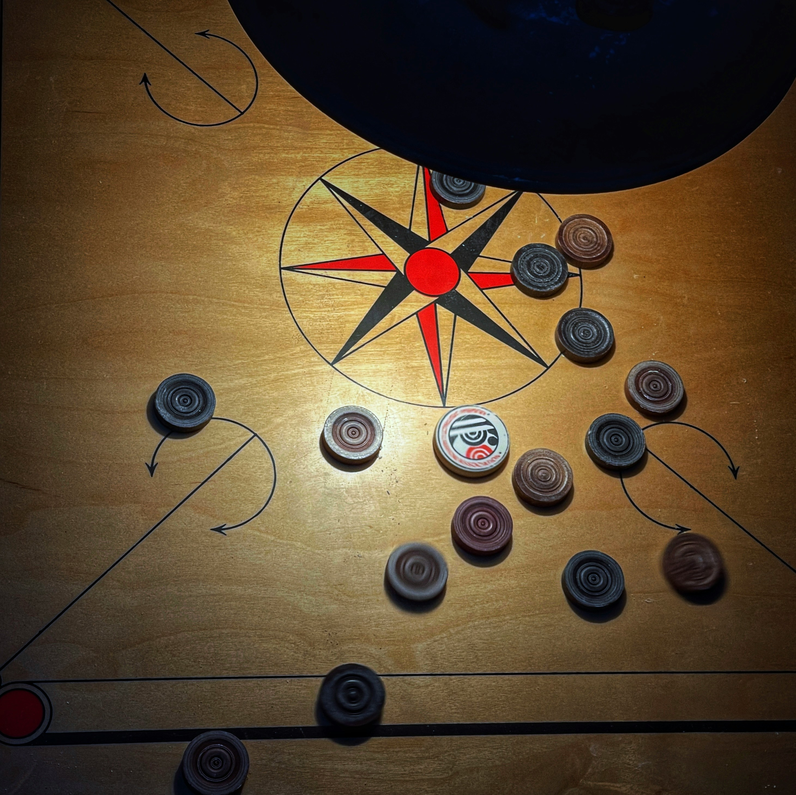
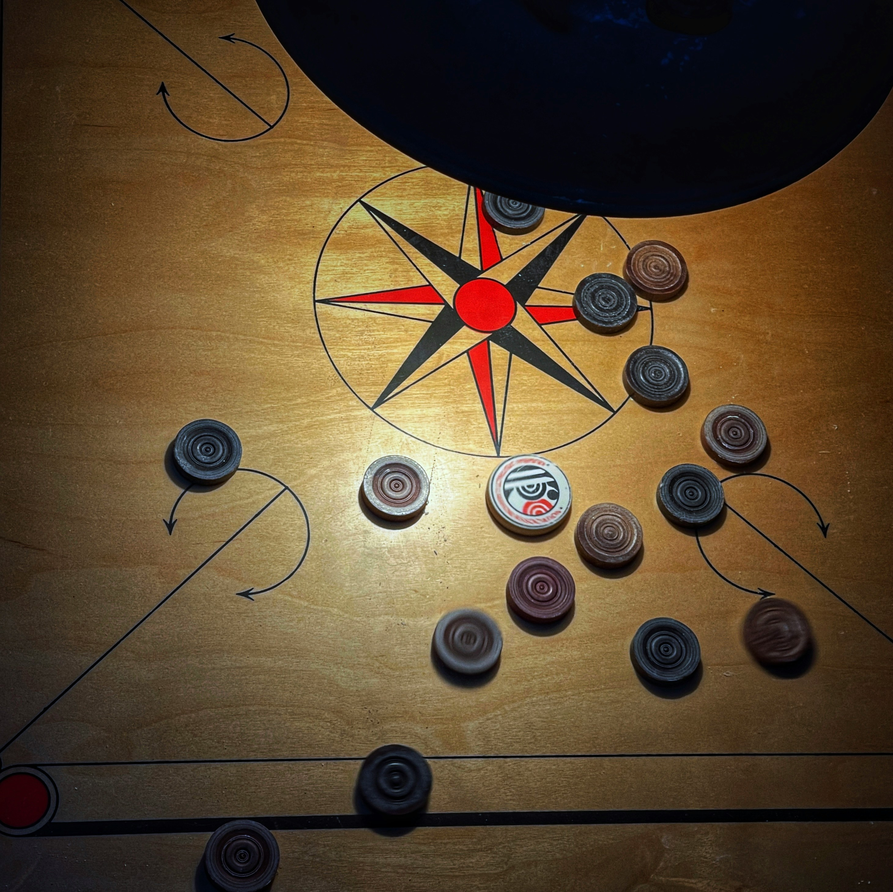

Hobbies
Chess
I have been interested in chess since 3rd grade. In 6th grade, I reached the division level, but unfortunately, I got eliminated. After that, my passion for chess faded.
However, when I joined college, my interest in chess reignited. In my college sports fest, I made it to the semi-finals, which motivated me to improve my game. Next time, I will give my best and aim for the championship! ♟🔥
Carrom
Carrom has always been a fun and exciting game for me. I enjoy the precision and strategy it requires, just like chess. Playing carrom helps me stay focused and improves my aiming skills.
Video Editing and Videography
I have a deep passion for video editing and videography, as they allow me to capture moments creatively and tell compelling stories. From shooting videos to adding effects and transitions, I enjoy every part of the process.
My skills in video editing helped me secure 1st place in the videography competition at my college sports fest, UDAAN’24. I covered various sports events and presented them in an engaging way. This experience further fueled my love for visual storytelling.
I’m always eager to explore new techniques, improve my editing skills, and create even more impactful videos! 🚀🎥
Cooking
Cooking is one of my biggest passions, especially when it comes to South Indian dishes. I love making crispy dosas with sambar, soft idlis with coconut chutney, and crunchy medu vadas. The flavors, the process, and the satisfaction of creating a perfect dish make cooking an enjoyable experience for me.
Whenever I reach home, the first thing I do is take over the kitchen and tell my mom to step aside so I can cook. There's something truly special about preparing food with my own hands and enjoying every bite of it! 😄🍽️